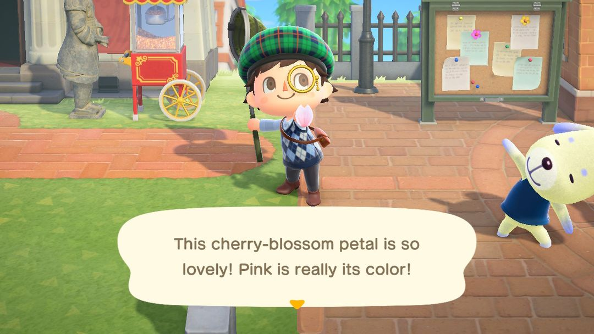
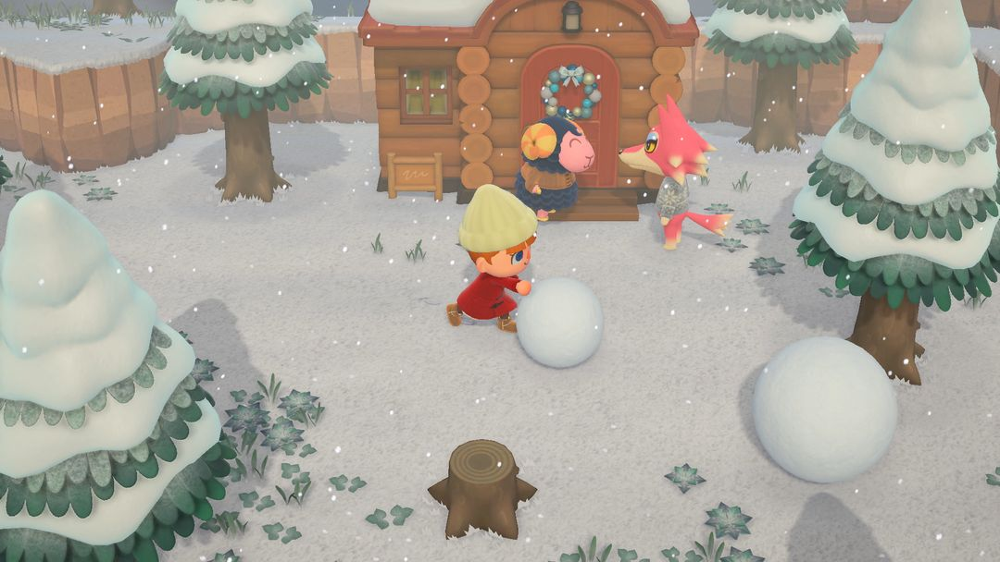
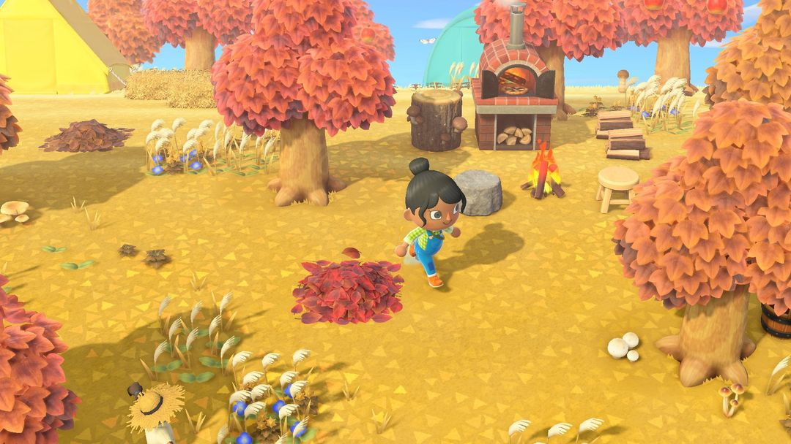

季節限定 DIY 材料一年表
櫻花、春筍、貝殼、樹果、蘑菇、楓葉、雪花、裝飾品：什麼時候撿，拿去做什麼
島上有一批 DIY 材料只在一年裡固定的幾段日子出現：櫻花花瓣、楓葉一年只飄 10 天，雪花、裝飾品也只在冬天那一陣子。日子一過，樹上、海灘上、半空中就再也找不到，想做對應的家具只能等明年。
北半球一年裡最忙的是秋冬：9 月起搖樹能搖下橡栗和松果，11 月整個月樹旁長蘑菇，11 月 16～25 日中間還夾著楓葉，12 月 11 日起又開始飄雪花。所以先把下面這張一年表看一遍，記下哪幾天要上線去撿；DIY方程式大多靠射氣球累積，冰雪系列得靠堆雪哥哥，真的錯過了，還能搭航平的船去補。
01一年表：什麼時候撿、怎麼撿
表裡的日期都以遊戲裡的時間為準。南半球的季節和北半球剛好差半年，所以大部分材料的月份往後挪了 6 個月；只有裝飾品是跟著年底走的，兩個半球都是 12 月 15 日到隔年 1 月 6 日。
| 材料 | 北半球 | 南半球 | 怎麼拿 |
| 春筍 | 2/25～5/31 | 8/25～11/30 | 斧頭砍竹子 |
| 櫻花花瓣 | 4/1～4/10 | 10/1～10/10 | 捕蟲網撈空中的花瓣 |
| 夏天貝殼 | 6/1～8/31 | 12/1～2 月底 | 海灘上撿 |
| 橡栗、松果 | 9/1～12/10 | 3/1～6/10 | 搖樹，松果只在針葉樹上 |
| 蘑菇 | 11 月整個月 | 5 月整個月 | 樹旁撿，珍貴蘑菇要挖 |
| 楓葉 | 11/16～11/25 | 5/16～5/25 | 捕蟲網撈空中的楓葉 |
| 雪花 | 12/11～2/24 | 6/11～8/24 | 捕蟲網撈 |
| 大雪花 | 同雪花 | 同雪花 | 完美的雪哥哥給 |
| 裝飾品（紅、藍、金） | 12/15～1/6 | 12/15～1/6 | 搖針葉樹 |
撿法都不難：春筍是拿斧頭砍竹子砍出來的，夏天貝殼在海灘上彎腰就能撿，橡栗和松果靠搖樹掉下來，松果只掛在針葉樹上；櫻花花瓣、楓葉和雪花都在半空中飄，得揮捕蟲網去撈；裝飾品也是搖針葉樹搖下來的。
櫻花和楓葉都只有 10 天，最容易錯過。雪花能撿兩個多月，這兩樣要是遇到那幾天沒怎麼上線，一整年就過去了。
秋冬最擠
北半球從 9 月起就能搖橡栗、松果，一直搖到 12 月 10 日；11 月整個月樹旁長蘑菇，11 月 16～25 日楓葉又插進來；12 月 11 日起開始飄雪花，12 月 15 日到隔年 1 月 6 日針葉樹上還掛著裝飾品。幾樣材料前後接連出現，這幾個月最好三不五時在島上繞一圈。春筍和櫻花則要等到明年春天。
南半球的月份整體往後挪半年：櫻花在 10 月 1～10 日，春筍一直砍到 11 月 30 日，12 月 1 日起海灘上開始出現夏天貝殼。裝飾品和北半球一樣，也是 12 月 15 日起。

櫻花花瓣要用捕蟲網在空中撈（英文版畫面）（圖：Nookipedia）
02DIY方程式從哪來
光有材料還不夠，得先學會對應的DIY方程式才做得出東西。來源主要有三個。
最主要的是射氣球。季節裡天上飄過的氣球，射下來會掉當季的DIY方程式，一直掉到你把當季的學完為止。材料季裡看到氣球飄過，最好追上去射下來。
其次是季節第一天去服務處。狸克或西施惠會送你一份當季的DIY方程式，例如春筍季的「流水素麵」、櫻花季的「賞花組合」、蘑菇季的「蘑菇花圈」。這份是季節第一天才送的，那天上線先進服務處繞一圈。
第三個是航平的遊船：有些季節島上的瓶中信裡也裝著當季的DIY方程式，第 5 節細說。
| 材料 | DIY方程式數 | 做得出來的 |
| 春筍 | 12 | 流水素麵、竹筍燈、蒸籠 |
| 櫻花花瓣 | 15 | 賞花組合、櫻花盆栽、櫻花雨傘 |
| 夏天貝殼 | 9 | 貝殼花圈、南方海洋牆、水面地板 |
| 橡栗、松果 | 10 | 樹果燈、小樹果樹、橡栗地毯 |
| 蘑菇 | 12 | 蘑菇燈、蘑菇陽傘、蘑菇屏風 |
| 楓葉 | 10 | 楓葉雨傘、石水盆～楓葉～、大樹果樹 |
| 雪花 | 26 | 冰床鋪、冰裝置藝術、3層雪人 |
| 裝飾品 | 18 | 大型聖誕樹、裝飾桌燈、特大裝飾 |
雪花這一列的 26 份裡，有 16 份（冰床鋪這類冰雪系列）只有雪哥哥會給，氣球不會掉。想學全冰雪系列，就得在下雪的日子裡一個接一個地堆雪哥哥。
小提示這些材料都能放進收納。季節快結束時多撿一些收起來，過了季也能繼續做；當季的DIY方程式沒學全也沒關係，等以後學到了再拿出來用。
03堆一個完美的雪哥哥
雪球只在北半球 12 月 11 日～2 月 24 日、南半球 6 月 11 日～8 月 24 日出現，剛好和雪花同一段日子。機場開放訪客的時候雪球不會出現，想堆雪哥哥就挑沒開放島嶼的時候。
找到兩個雪球，推著在地上滾，雪球會越滾越大，再把一個推到另一個上面，就堆成了雪哥哥。兩個都要滾到很大，頭比身體稍微小一點，才算完美。推的時候別急著把兩個拼在一起，先各自滾到夠大。
完美的雪哥哥會送你一個大雪花和一份冰雪系列的DIY方程式。冰雪系列那 16 份只能這樣拿，所以下雪的季節裡值得多堆幾次。
第一次堆的那個比較寬鬆，不管堆成什麼樣子都會給。雪哥哥能在島上撐 4 天，之後 3 天每天過去跟他聊幾句，他還會再給一個大雪花。等冰雪系列的DIY方程式學全了，完美的雪哥哥就只給大雪花了。

雪球推著走會越滾越大（圖：Nookipedia）
04蘑菇怎麼撿
蘑菇季裡，每天樹旁都會冒出圓形、瘦小、扁平、出色四種蘑菇，沿著島上的樹一棵棵看一圈就能撿齊。
珍貴蘑菇藏得比較深，它埋在樹旁的土裡，要拿鏟子挖出來。一個珍貴蘑菇能賣 16,000 鈴錢，是這些季節材料裡最值錢的，做家具用不完的話賣掉也不虧。
蘑菇還能直接吃，吃下去渾身是勁，能把整棵樹挖起來移到別處。

秋天的島，樹下能看到蘑菇（圖：Nookipedia）
05錯過了：搭航平的船去補
碼頭的航平每天能載你出海一次，收 1,000 Nook哩數。偶爾會開到停在某個季節的島上：櫻花、竹子、夏天貝殼、蘑菇、楓葉、冬天各有一種，每種的機率大約 3%。到了那座島，能撿到那個季節的材料，海邊的瓶中信裡也可能裝著當季的DIY方程式。
機率不高，只能算碰運氣。還有一個前提：你自己的島上得先經歷過那個季節，才可能被帶到對應的島。
把旅館第一間 VIP 客房布置好以後，航平每天還能多跑一趟，這一趟收 100 旅館券。一天出海兩次，遇到季節島的機會也多一點。
06版本變化
航平出海是 2.0 加入的；布置好 VIP 客房多跑一趟，是 3.0 加入的。
動森圈圈 · iOS App 和微信小程式都搜「動森圈圈」